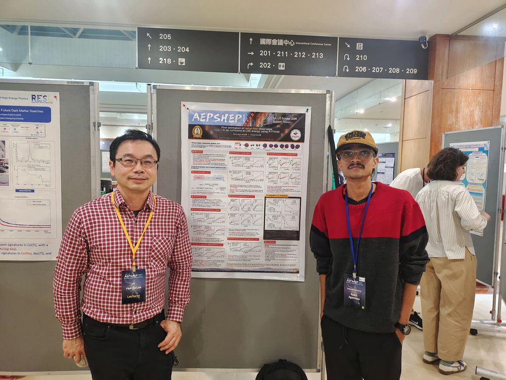

14–27 October 2026, Taoyuan, Taiwan
Poster at the Asia-Europe-Pacific School of High-Energy Physics
At the school's poster session I presented the first estimation of the radial-flow observable v0(pT) in pp collisions using PYTHIA8. My place at the two-week school was fully funded by its international sponsorship.